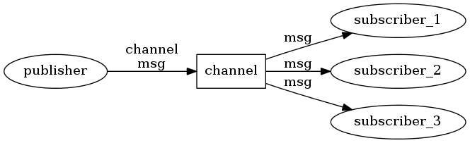
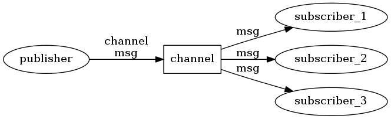

Redis提供簡易的發布訂閱功能，雖然功能沒有RabbitMq跟Kafka多，但在有限度的支援跟功能也是不錯的選擇
Redis發布訂閱腳色
- Publisher: 生產者，產生事件內容
- Channel: 頻道，就是kafka裡的topic主題
- Consumer: 消費者，訂閱頻道後便可接收到事件訊息

使用Redis發布訂閱該注意的事情
- 不同於RMQ跟kafka，發布事件當下沒消化的話，事件並不會持久化在redis上

Redis提供簡易的發布訂閱功能，雖然功能沒有RabbitMq跟Kafka多，但在有限度的支援跟功能也是不錯的選擇
Redis發布訂閱腳色

使用Redis發布訂閱該注意的事情